⚙
Compreender
O papel do sistema operacional entre pessoas, aplicativos e equipamentos.
O software que organiza o dispositivo, conecta aplicativos ao hardware e transforma cliques em trabalho realizado.
O papel do sistema operacional entre pessoas, aplicativos e equipamentos.
Elementos da área de trabalho, janelas, menus, arquivos e pastas.
Windows, Linux, macOS, ChromeOS e sistemas móveis sem “torcida”.
Escolher ferramentas e organizar uma rotina digital no setor imobiliário.
O sistema muda, mas muitos conceitos se repetem: abrir aplicativos, alternar janelas, salvar arquivos e proteger a conta.
Distribui tempo do processador entre os programas.
Reserva RAM e evita que aplicativos se atrapalhem.
Organiza nomes, pastas, permissões e armazenamento.
Controla teclado, câmera, impressora, som e rede.
Gerencia contas, senhas, atualizações e acessos.
Oferece janelas, menus, ícones ou linha de comando.
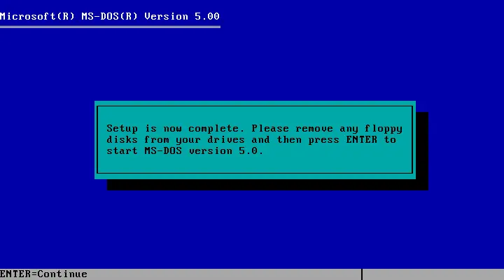
O computador executava tarefas sem janelas, ícones ou toque. A precisão era essencial.
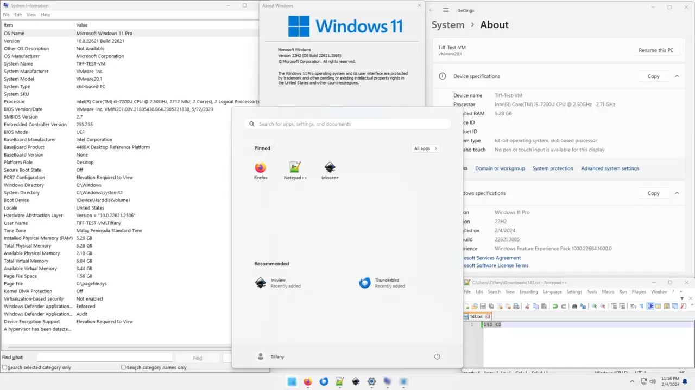
A aparência pode variar conforme a versão e a personalização.
Seleciona ou ativa controles como botões e menus.
Normalmente abre um arquivo, pasta ou atalho.
Exibe ações relacionadas ao item selecionado.
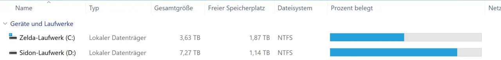
2026-08-28_Contrato_Locacao_Apto305.pdf“Linux” costuma designar uma família de sistemas. As distribuições combinam o núcleo Linux, ferramentas, interface e catálogo de programas.
Amplo ecossistema e foco em facilidade.
Interface familiar para quem vem do Windows.
Tecnologias atuais e ambiente GNOME.
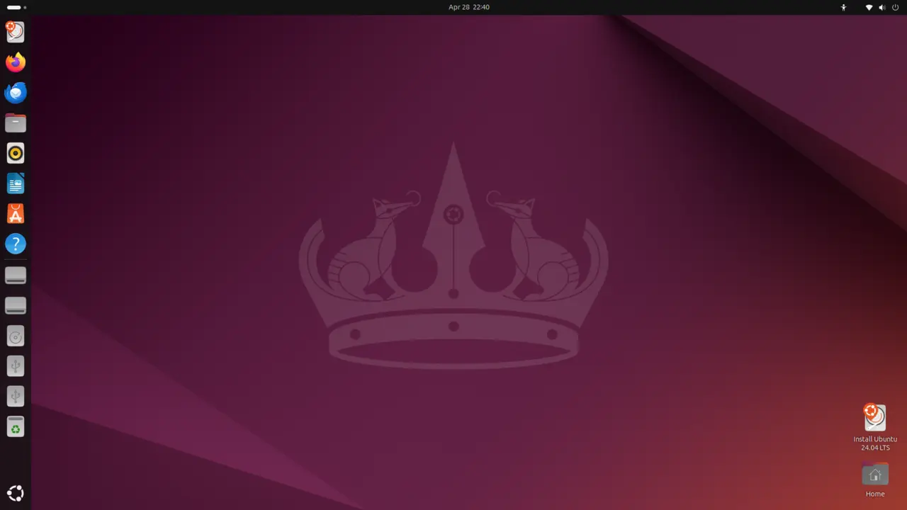
Usa o ambiente GNOME com adaptações, como a barra lateral de aplicativos. É comum em educação, desenvolvimento e servidores.
Referência visual: 24.04 LTS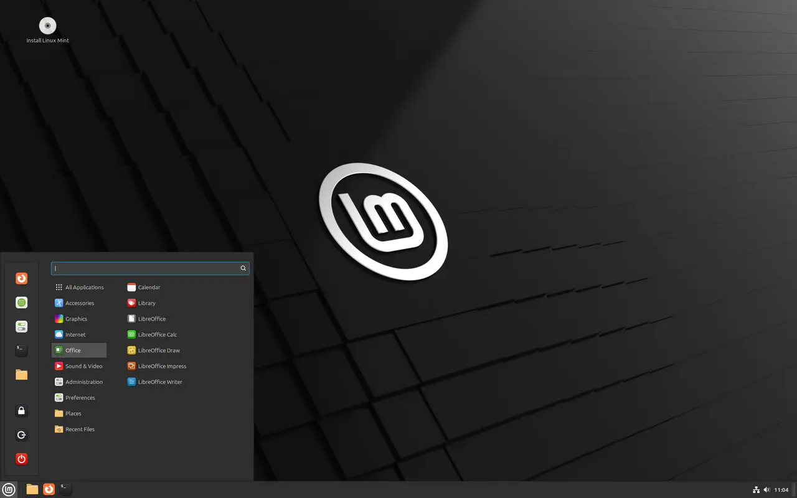
Menu no canto, painel inferior e organização familiar. Essa semelhança pode facilitar a adaptação de iniciantes.
Referência visual: versão 22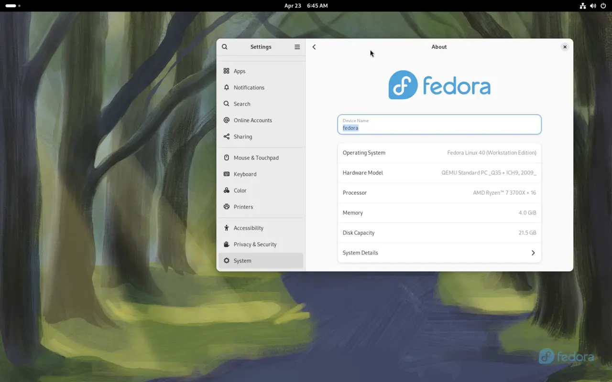
Apresenta uma experiência GNOME próxima do projeto original e valoriza tecnologias abertas recentes.
Referência visual: versão 40| Critério | Windows | Linux |
|---|---|---|
| Uso cotidiano | Muito difundido em escritórios e computadores pessoais. | Varia conforme a distribuição e o ambiente gráfico. |
| Aplicativos | Ampla oferta comercial e integração com ferramentas corporativas. | Grande catálogo livre; alguns programas comerciais não têm versão nativa. |
| Personalização | Opções consistentes e controladas pelo fabricante. | Alta possibilidade de escolha e modificação. |
| Custo | Licença geralmente incluída no equipamento ou adquirida à parte. | Muitas distribuições podem ser usadas sem custo de licença. |
| Decisão profissional | Compatibilidade, suporte, segurança e fluxo de trabalho pesam mais do que preferência pessoal. | |
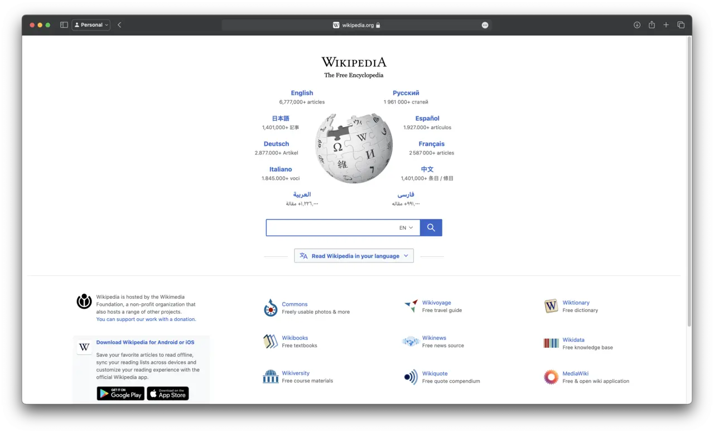
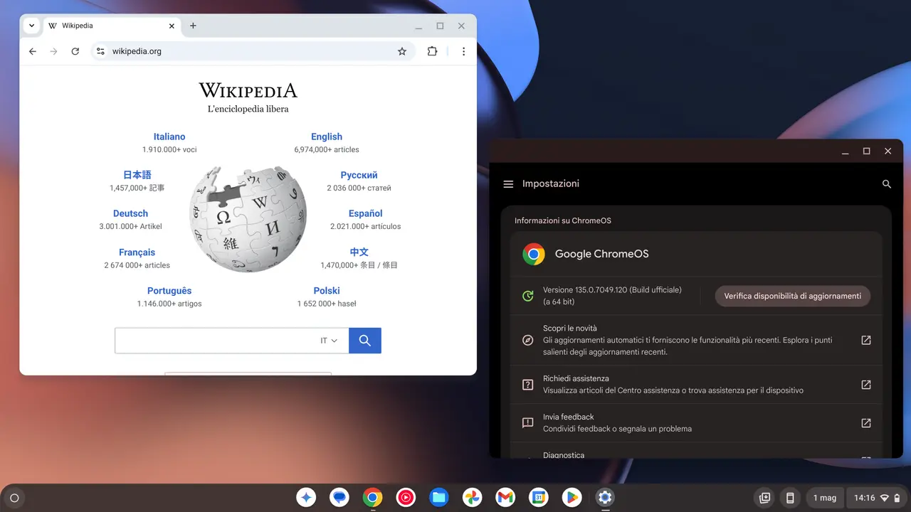
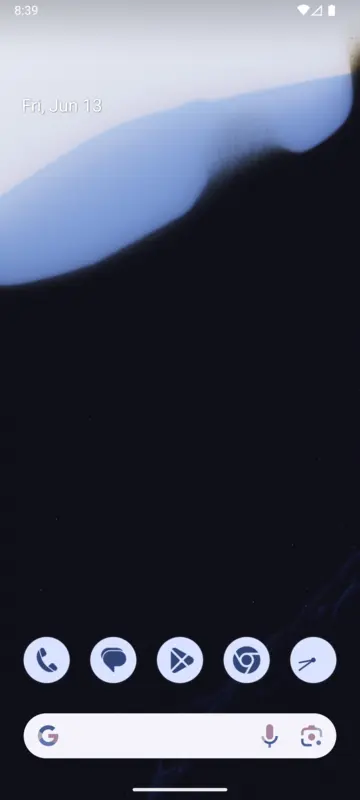
Documentos prontos para leitura e compartilhamento.
Texto editável, como proposta ou contrato em elaboração.
Planilhas de imóveis, valores e contatos.
Fotografias, plantas, mapas e material de divulgação.
Escolha a ação correta:
Nome, conteúdo e localização.
O item normalmente vai para a lixeira.
Recupere enquanto ainda estiver na lixeira.
Mantenha backup de documentos importantes.
Prepara uma cópia.
Prepara para mover.
Conclui a operação.
Volta a ação recente.
Troca de janela.
Abre o Explorador.
Grava alterações.
Busca no conteúdo.
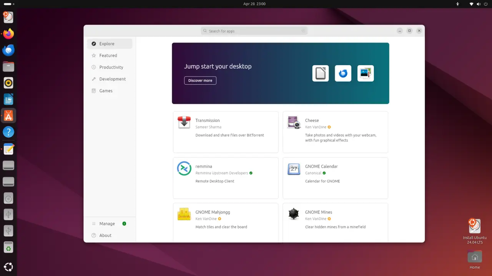
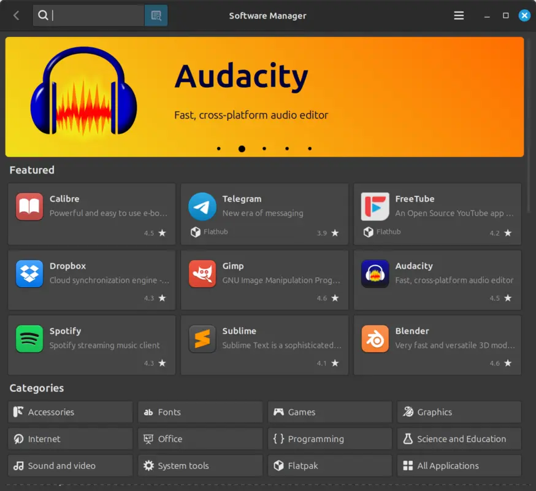
Cada pessoa usa sua própria senha, arquivos e preferências.
Use conta comum no dia a dia; administrador só quando necessário.
Ao se afastar, pressione Win + L no Windows.
Revise quais pastas e dados estão sendo enviados à nuvem.
Prefira frase longa, única e verificação em duas etapas.
Mantenha cópias verificadas de contratos, fotos e planilhas.
Windows, Linux ou macOS podem atender. A decisão depende dos programas exigidos, suporte disponível, impressoras e integração com a equipe.
A equipe tem três atendentes, trabalha com contratos, planilhas, fotos e um sistema web. Também realiza visitas externas.
0/10
Cada resposta é uma oportunidade de consolidar o aprendizado.
Pessoas e aplicativos ao hardware do dispositivo.
Processos, memória, dispositivos, contas, arquivos e pastas.
Atualizações, permissões, bloqueio e backup reduzem riscos.
Reconhecer essa lógica ajuda a aprender qualquer sistema com mais autonomia.
Capturas reais, sem geração por inteligência artificial. As imagens foram mantidas na proporção original.
← → ou botões inferiores.
Pressione F ou use o botão superior.
Use o botão superior para ir diretamente a qualquer slide.